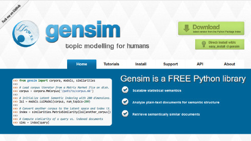
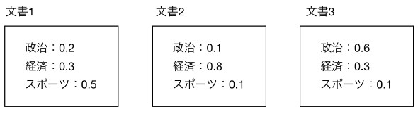

使用Gensim¶
gemsim是一个主题模型Python工具库，能够从文档中有效地自动抽取语义主题。gensim中的算法包括：LSA(Latent Semantic Analysis), LDA(Latent Dirichlet Allocation), RP (Random Projections),word2vec 通过在一个训练文档语料库中，检查词汇统计联合出现模式, 可以用来发掘文档语义结构，这些算法属于非监督学习，可以处理原始的，非结构化的文本(plain text)。
在此，使用LDA和word2vec进行实践。

下载数据/预处理¶
文本分类标准测试集reuters-21578¶
Reuters-21578_ 是一个开放数据集，用于文本分类研究的测试集合。是路透社过去有关金融新闻的文章集。
什么是NLTK？¶
NLTK（Python自然语言工具包）用于诸如标记化、词形还原、词干化、解析、POS标注等任务。该库具有几乎所有NLP任务的工具。
利用NLTK下载¶
[3]:
import matplotlib.pyplot as plt
%matplotlib inline
import gensim
import nltk
nltk.download("reuters")
nltk.download("stopwords")
nltk.download("punkt")
[nltk_data] Downloading package reuters to /root/nltk_data...
[nltk_data] Package reuters is already up-to-date!
[nltk_data] Downloading package stopwords to /root/nltk_data...
[nltk_data] Package stopwords is already up-to-date!
[nltk_data] Downloading package punkt to /root/nltk_data...
[nltk_data] Package punkt is already up-to-date!
[3]:
True
有连续三个nltk.download，nltk.download(reuters)是Reuters-21578数据。另外两个nltk.downloads下载数据供以后使用。将下载的文件保存在适当的本地目录中。
读取数据并存于变量中¶
[4]:
reuters = nltk.corpus.reuters
paras = reuters.paras()
从文件中读取Reuters-21578数据，存于reuters中。
reuters中有各种信息的对象，新闻记事的文本信息通过paras方法获取。 paras[i]中的第i条指向一个句子，每条是一个句子的列表，每句是单词列表。
看一下第一篇文章中第一句话的20个单词。
[5]:
paras[0][0][:20]
[5]:
['ASIAN',
'EXPORTERS',
'FEAR',
'DAMAGE',
'FROM',
'U',
'.',
'S',
'.-',
'JAPAN',
'RIFT',
'Mounting',
'trade',
'friction',
'between',
'the',
'U',
'.',
'S',
'.']
在Gensim中使用「bag of words」“词袋”形式的文档。所谓的单词袋形式是一种忽略单词的排列方式的数据格式，只保留有关文档中每个单词出现次数的信息。
去除停用词¶
有一点需要注意。通常在自然语言处理中，去除停用词是预处理工作。停用词是指，经常使用但实际上不影响句子解释的词。如在英语中的冠词和介词等。这些是是人们阅读英语句子时的重要信息，但在不考虑单词顺序单词袋中，就变成了无用的信息。
看一下NLTK中的英语停用词。
[6]:
stop_words = set(nltk.corpus.stopwords.words("english"))
下面是英文字母顺序的前十个停用词。
[7]:
sorted(stop_words)[:10]
[7]:
['a', 'about', 'above', 'after', 'again', 'against', 'ain', 'all', 'am', 'an']
将数据转换为“词序列”¶
把文档数据转换为“字符串双重列表”。换句话说，就是把每篇文章原有“段落”结构，转换为单纯的“单词序列”。
[8]:
import itertools
reuters_texts = [itertools.chain(*p) for p in paras]
reuters_texts_filtered = [[w.lower() for w in p if w not in stop_words and len(w) >= 2] for p in reuters_texts]
reuters_texts变量存放结果，而去除了停用词和单一字母单词的结果存于reuters_texts_filtered中，
转换为Corpus(语料库)格式¶
转换为Gensim中使用的“语料库”格式。语料库是自然语言处理中经常使用的术语，通常定义为易于进行文章的构造化结构。Gensim中是语料库的单袋格式。
[9]:
dictionary = gensim.corpora.Dictionary(itertools.chain(reuters_texts_filtered))
reuters_corpus = [dictionary.doc2bow(text) for text in reuters_texts_filtered]
gensim.corpora.Dictionary是对每个单词的数值定义的类型。该类型能够进行单词和数字的双向转换。第二行是利用它制作一套单词格式的语料库。显示reuters_corpus中第一个文档的10个单词。
[10]:
reuters_corpus[0][:10]
[10]:
[(0, 1),
(1, 6),
(2, 1),
(3, 1),
(4, 2),
(5, 1),
(6, 1),
(7, 1),
(8, 1),
(9, 1)]
（0，1），（1，6）表示指第0个单词出现1次，第1个单词出现6次。
到此为止是预处理部分，下面使用机器学习进行分析。
使用LDA计算主题模型¶
什么是LDA¶
LDA是“主题模型”的手法之一。主题模型是指推测文档主题的模型，用于文档分类和搜索。 LDA通过“概率分布”预测每个文档的主题。
如，假设新闻网站包含三个主题的要素：“政治”，“经济”和“体育”。LDA分析得到的是三项要素的加权值。如果将其标准化总和为 1，则可以将LDA视为这三个主题的概率分布。
下图显示的是计算结果。

在LDA中，从指定主题的数量。然后得到“有哪些主题”，并计算每个文档的主题分布。
LDA训练¶
[11]:
dictionary[0]
model=gensim.models.ldamodel.LdaModel(reuters_corpus, num_topics=20,id2word=dictionary.id2token, random_state=0)
dictionary[0]是函数dictionary.id2token所需的手续。在第二行中，建立模型并训练。参数num_topics是主题数，参数id2word是数字/单词的转换函数。之后的可视化中需要。 Random_state是随机数种子，用于多次执行提高结果的再现度。
[12]:
model.print_topics()
[12]:
[(0,
'0.052*"bank" + 0.037*"mln" + 0.034*"stg" + 0.023*"said" + 0.018*"the" + 0.015*"market" + 0.013*"pct" + 0.011*"money" + 0.011*"billion" + 0.011*"dlrs"'),
(1,
'0.032*"pct" + 0.025*"said" + 0.024*"billion" + 0.016*"the" + 0.013*"year" + 0.010*"bank" + 0.007*"government" + 0.007*"trade" + 0.007*"foreign" + 0.007*"last"'),
(2,
'0.028*"lt" + 0.023*"said" + 0.017*"inc" + 0.017*"corp" + 0.015*"dlrs" + 0.015*"mln" + 0.012*"unit" + 0.012*"co" + 0.009*"company" + 0.008*"division"'),
(3,
'0.044*"said" + 0.028*"company" + 0.020*"dlrs" + 0.013*"lt" + 0.012*"share" + 0.011*"the" + 0.010*"inc" + 0.008*"offer" + 0.008*"would" + 0.007*"mln"'),
(4,
'0.046*"january" + 0.044*"billion" + 0.041*"february" + 0.032*"dlrs" + 0.031*"pct" + 0.027*"mln" + 0.023*"year" + 0.021*"rose" + 0.017*"1986" + 0.016*"december"'),
(5,
'0.024*"said" + 0.017*"dlrs" + 0.014*"the" + 0.014*"year" + 0.011*"mln" + 0.008*"pct" + 0.008*"bank" + 0.007*"banks" + 0.006*"company" + 0.006*"week"'),
(6,
'0.063*"cts" + 0.035*"april" + 0.033*"record" + 0.032*"lt" + 0.027*"div" + 0.024*"vs" + 0.024*"qtly" + 0.023*"pay" + 0.023*"prior" + 0.021*"march"'),
(7,
'0.027*"said" + 0.024*"dollar" + 0.012*"yen" + 0.011*"rates" + 0.011*"exchange" + 0.011*"currency" + 0.011*"paris" + 0.010*"the" + 0.009*"baker" + 0.009*",""'),
(8,
'0.052*"pct" + 0.033*"shares" + 0.033*"said" + 0.017*"stake" + 0.017*"lt" + 0.016*"offer" + 0.016*"group" + 0.010*"the" + 0.010*"common" + 0.009*"stock"'),
(9,
'0.037*"said" + 0.016*"oil" + 0.014*"the" + 0.010*","" + 0.009*"prices" + 0.008*"pct" + 0.007*"would" + 0.007*"year" + 0.006*"price" + 0.005*"market"'),
(10,
'0.031*"mln" + 0.027*"said" + 0.024*"tonnes" + 0.022*"000" + 0.015*"the" + 0.013*"year" + 0.011*"1986" + 0.009*"wheat" + 0.009*"dlrs" + 0.007*"production"'),
(11,
'0.031*"said" + 0.017*"lt" + 0.010*"the" + 0.010*"stock" + 0.009*"delegates" + 0.008*"buffer" + 0.008*"cocoa" + 0.007*"gulf" + 0.006*"ltd" + 0.005*"would"'),
(12,
'0.032*"said" + 0.010*"coffee" + 0.009*"the" + 0.008*"would" + 0.007*"year" + 0.006*"trade" + 0.006*","" + 0.006*"brazil" + 0.006*"china" + 0.006*"export"'),
(13,
'0.029*"said" + 0.021*"trade" + 0.017*"the" + 0.016*"would" + 0.008*"agreement" + 0.007*"japan" + 0.007*"ec" + 0.007*","" + 0.006*"bill" + 0.006*".""'),
(14,
'0.030*"dlrs" + 0.029*"said" + 0.020*"lt" + 0.015*"pct" + 0.011*"the" + 0.011*"corp" + 0.009*"cyclops" + 0.009*"usair" + 0.008*"federal" + 0.008*"company"'),
(15,
'0.034*"said" + 0.032*"lt" + 0.026*"mln" + 0.018*"stock" + 0.017*"dlrs" + 0.015*"company" + 0.015*"inc" + 0.013*"the" + 0.010*"shares" + 0.010*"corp"'),
(16,
'0.019*"said" + 0.011*"canada" + 0.009*"trade" + 0.009*"the" + 0.008*"would" + 0.008*"canadian" + 0.007*"chrysler" + 0.005*"lawson" + 0.005*"government" + 0.005*",""'),
(17,
'0.014*")," + 0.012*"plant" + 0.010*"said" + 0.009*"to" + 0.008*"saudi" + 0.008*"aluminium" + 0.007*"bolivia" + 0.007*"the" + 0.007*"nil" + 0.007*"corn"'),
(18,
'0.088*"vs" + 0.070*"mln" + 0.048*"000" + 0.042*"net" + 0.041*"cts" + 0.035*"loss" + 0.029*"dlrs" + 0.026*"shr" + 0.020*"profit" + 0.016*"qtr"'),
(19,
'0.020*"said" + 0.012*"the" + 0.009*"port" + 0.009*"shipping" + 0.008*"iran" + 0.008*"gulf" + 0.007*"soviet" + 0.007*"ship" + 0.007*"unemployment" + 0.006*"ships"')]
对于每个主题，以单词和权重的最高顺序排列。第0个主题中bank和million权重高，可以视为是银行相关的主题。第三个主题中公司，dlrs，股票的权重高，可以看作是有关公司股价的主题。
推测主题¶
使用和训练相同的数据，推测文档主题。
[13]:
pred, _ = model.inference(reuters_corpus)
pred /= pred.sum(axis=1).reshape(-1, 1)
第一行是计算预测值。第二行对结果正规化。
用条形图可视化前5个文档的主题分布。
[14]:
fig, axes = plt.subplots(1, 5, figsize=(15, 3))
for i in range(5):
axes[i].set_ylim(0, 1)
axes[i].bar(range(20), pred[i])
第一个是文档中信息最强烈的主题
[15]:
pred[0].argmax()
[15]:
13
从上面的主题构成词列表中查找第13个主题，会发现诸如“交易”和“协议”之类的权重很高。推测，与国际贸易协定有关。让我们看一下文档（仅显示前300个字符）。
[16]:
fileids = reuters.fileids()
print(reuters.raw(fileids[0])[:300])
ASIAN EXPORTERS FEAR DAMAGE FROM U.S.-JAPAN RIFT
Mounting trade friction between the
U.S. And Japan has raised fears among many of Asia's exporting
nations that the row could inflict far-reaching economic
damage, businessmen and officials said.
They told Reuter correspondents in Asian
这是关于日美贸易摩擦的新闻。事实证明，LDA判决是合理的。
Word2vec词嵌入¶
下载Quora数据集¶
下载数据“quora_duplicate_questions.tsv”, 将其放在目录“data”中。 以其中的“question1”为列。它收集了大约40万个英语问题。 读取数据，分解为单词，显示前10个句子的内容。
[17]:
import csv
quora = []
with open("data/quora_duplicate_questions.tsv", encoding='utf-8') as fp:
reader = csv.reader(fp, delimiter="\t")
next(reader)
for row in reader:
quora.append(nltk.tokenize.word_tokenize(row[3].lower()))
print(quora[:10])
[['what', 'is', 'the', 'step', 'by', 'step', 'guide', 'to', 'invest', 'in', 'share', 'market', 'in', 'india', '?'], ['what', 'is', 'the', 'story', 'of', 'kohinoor', '(', 'koh-i-noor', ')', 'diamond', '?'], ['how', 'can', 'i', 'increase', 'the', 'speed', 'of', 'my', 'internet', 'connection', 'while', 'using', 'a', 'vpn', '?'], ['why', 'am', 'i', 'mentally', 'very', 'lonely', '?', 'how', 'can', 'i', 'solve', 'it', '?'], ['which', 'one', 'dissolve', 'in', 'water', 'quikly', 'sugar', ',', 'salt', ',', 'methane', 'and', 'carbon', 'di', 'oxide', '?'], ['astrology', ':', 'i', 'am', 'a', 'capricorn', 'sun', 'cap', 'moon', 'and', 'cap', 'rising', '...', 'what', 'does', 'that', 'say', 'about', 'me', '?'], ['should', 'i', 'buy', 'tiago', '?'], ['how', 'can', 'i', 'be', 'a', 'good', 'geologist', '?'], ['when', 'do', 'you', 'use', 'シ', 'instead', 'of', 'し', '?'], ['motorola', '(', 'company', ')', ':', 'can', 'i', 'hack', 'my', 'charter', 'motorolla', 'dcx3400', '?']]
去除停用词，显示前10个句子。
[18]:
quora_filtered = []
for sentence in quora:
quora_filtered.append([w for w in sentence if w not in stop_words and len(w) > 1])
print(quora_filtered[:10])
[['step', 'step', 'guide', 'invest', 'share', 'market', 'india'], ['story', 'kohinoor', 'koh-i-noor', 'diamond'], ['increase', 'speed', 'internet', 'connection', 'using', 'vpn'], ['mentally', 'lonely', 'solve'], ['one', 'dissolve', 'water', 'quikly', 'sugar', 'salt', 'methane', 'carbon', 'di', 'oxide'], ['astrology', 'capricorn', 'sun', 'cap', 'moon', 'cap', 'rising', '...', 'say'], ['buy', 'tiago'], ['good', 'geologist'], ['use', 'instead'], ['motorola', 'company', 'hack', 'charter', 'motorolla', 'dcx3400']]
什么是Word2vec¶
词嵌入(Word Embedding)：
就是将「不可计算」「非结构化」的词转化为「可计算」「结构化」的向量,这一步解决的是”将现实问题转化为数学问题“ Word2vec是词嵌入方式之一，属于NLP领域。将词转化为「可计算」「结构化」的向量的过程。
Word2vec是一种将词嵌入到指定维度空间中的算法，空间中单词之间距离的接近度就是单词含义的接近度。
使用Word2vec训练¶
与LDA不同，仅需要单词列表，而不需要语料库数据。
[19]:
model = gensim.models.Word2Vec(quora_filtered, size=50, window=5)
此处指定的“size”是嵌入维度空间的尺寸，“窗口”是连接单词数。
使用Word2vec推测¶
看一下训练后的模型中的与“生病”和“演员”两个词相近的词。
[20]:
model.wv.similar_by_word("sick")
/root/anaconda3/envs/ml-dev/lib/python3.5/site-packages/gensim/matutils.py:737: FutureWarning: Conversion of the second argument of issubdtype from `int` to `np.signedinteger` is deprecated. In future, it will be treated as `np.int64 == np.dtype(int).type`.
if np.issubdtype(vec.dtype, np.int):
[20]:
[('angry', 0.8846410512924194),
('hungry', 0.8809215426445007),
('pierced', 0.8643348217010498),
('uncomfortable', 0.8594077229499817),
('dizzy', 0.8556342720985413),
('drunk', 0.8525719046592712),
('depressed', 0.8452755212783813),
('jealous', 0.8409408330917358),
('aroused', 0.8362992405891418),
('horny', 0.8306034803390503)]
单词从上到下按顺序排列。可以结果是合理的。
[21]:
model.wv.similar_by_vector("actor")
[21]:
[('actress', 0.92546546459198),
('singer', 0.8973912596702576),
('bollywood', 0.8659350872039795),
('actors', 0.8614586591720581),
('superhero', 0.8529343008995056),
('actor/actress', 0.8393876552581787),
('comedy', 0.8310166597366333),
('portrayed', 0.8223127126693726),
('actresses', 0.8207921385765076),
('hollywood', 0.81743323802948)]
总结¶
演示Gensim的典型用法，LDA和Word2vec。这些可以用来和主题模型的类似的领域比如文档检索。 处理的是英文数据，在中文，日文中处理时，还需要构词分割等工具。比较知名的有MeCab、Juman、Sudachi等。
结束语¶
广泛而浅显介绍了机器学习中使用各种工具库，在库的选择上，是基于作者本身的经验，可能有所偏颇。希望读者通过学习，对Python机器学习中各种工具库的使用有一个宏观明确的认识。